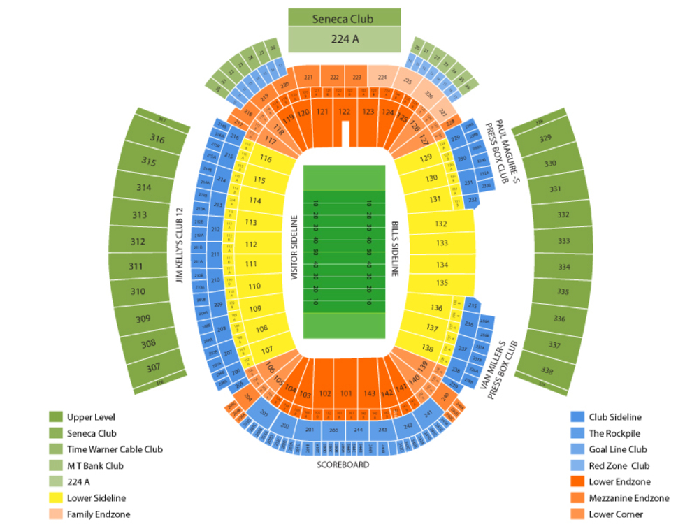

Tickets can be purchased from any official Bills store, as well as popular ticket sites such as TicketMaster and StubHub. As a friendly reminder, it is important to verify that your tickets are coming from a legitemate source. Buffalo Bills are not responsible for any counterfeit tickets.
It is important when purchasing tickets to know where you will be sitting, to find the perfect ticket for you. Use the stadium map below to navigate the stadium to find your perfect seat. In addition, use this SeatGeek interactive map to see the stadium view from where you choose to sit.
Tickets range from approximately $70 up to $400. Ticket price varies on location in the stadium, with more expensive tickets closer to the middle of the field and in the low seat section.